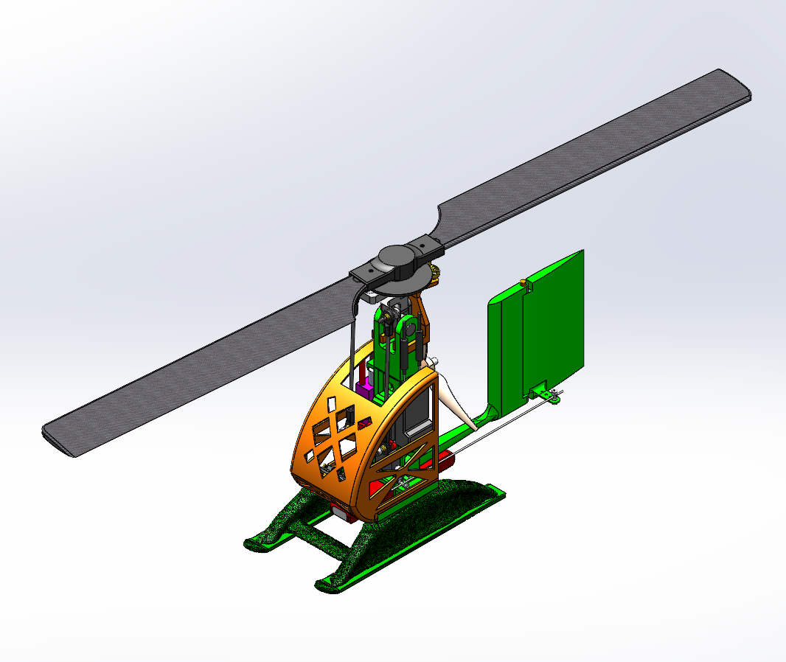
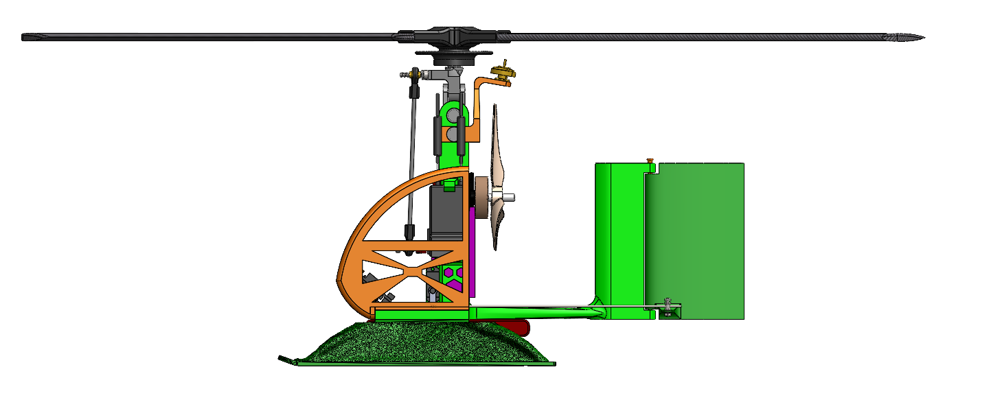
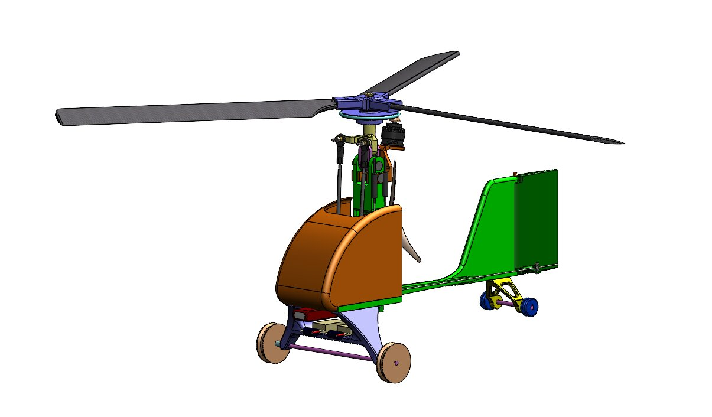
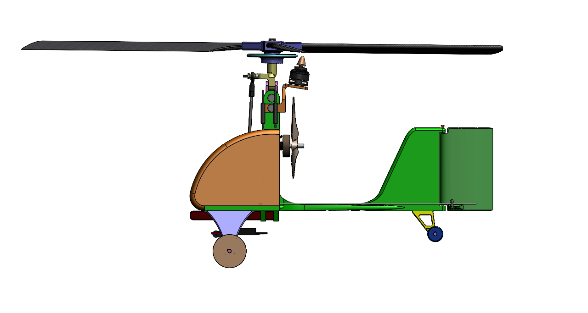
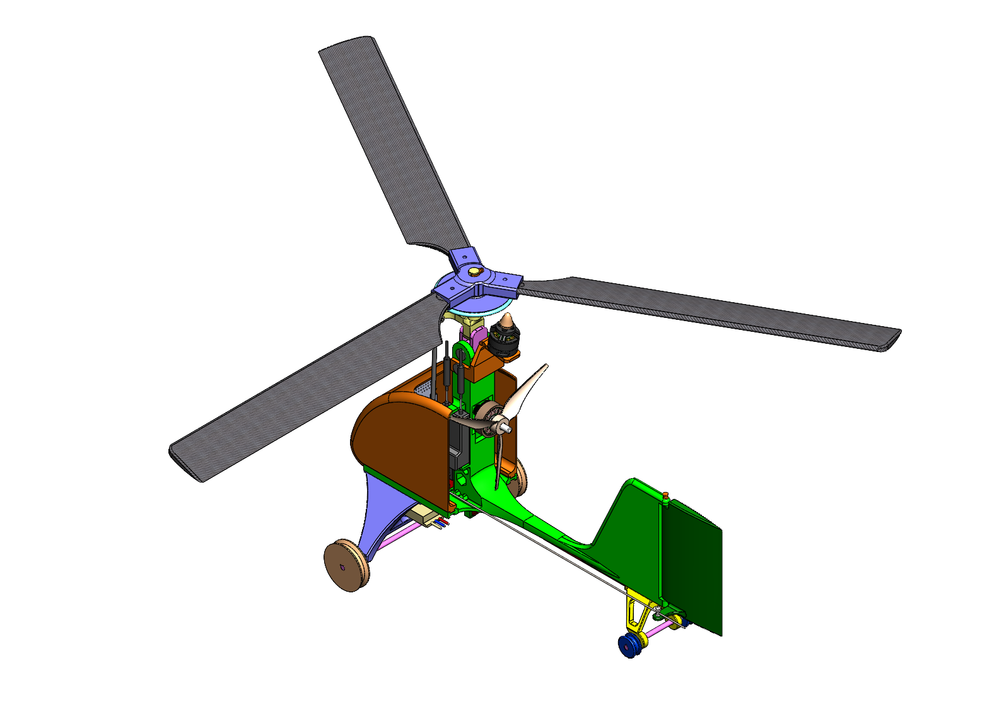

Senior Design Capstone: Autogyro
The project started with the first CAD concept of the autogyro, where the main structural layout and component placement were established. This stage focused on defining the fuselage, canopy region, tail structure, and rotor support geometry to create a workable foundation for the rest of the design process.
1. Initial Design
The project began with the first autogyro concept, which established the general layout of the fuselage, canopy, and rotor-related components. At this stage, the focus was on creating a workable starting point that could be manufactured and tested.


2. Challenges and Areas for Improvement
After reviewing the first concept, it became clear that the design needed further refinement in both structure and efficiency. Early versions contained areas with excess material and incomplete integration, so multiple concepts were explored to improve the canopy shape, reduce weight, and create a more practical configuration for fabrication and assembly.


3. Design Iterations
Once the main improvement areas were identified, the design moved into a more developed stage. These iterations focused on refining the canopy and fuselage geometry, improving the overall shape of the autogyro, and integrating the rotor system into the design more effectively. During this phase, all prototype parts were first printed in PLA so the team could test fitment, evaluate the geometry, and make design adjustments before moving to the final material. This allowed the design to be revised efficiently while confirming that the layout and major components worked together as intended.


4. Final Outcome
The final design represents a much more complete and optimized version of the autogyro. After the design was validated through PLA prototypes, the final version was printed in ASA Aero to reduce overall weight. Although the canopy originally included lightening holes, those features had to be removed because they made the ASA Aero print difficult and unreliable. Even with the holes removed, weight was still reduced through the final material choice. Several additional design changes were made to improve performance and functionality. The overall body length was increased to move the empennage out of a dead zone in the incoming airflow and improve aerodynamic effectiveness. The rotor configuration was updated from two blades to three blades because, in this design, the three-blade setup provided better overall performance and more consistent behavior. A more powerful motor was also introduced to meet the higher power demands of the system. In addition, the landing gear was redesigned because the previous setup had difficulty breaking traction in surf-like ground conditions. These final updates created a more refined and practical configuration that better balanced manufacturability, weight reduction, and performance goals.



5. Key Takeaways
This project strengthened my experience in SolidWorks, design iteration, and technical communication. It also showed me the importance of balancing performance goals with practical manufacturing decisions throughout the design process.